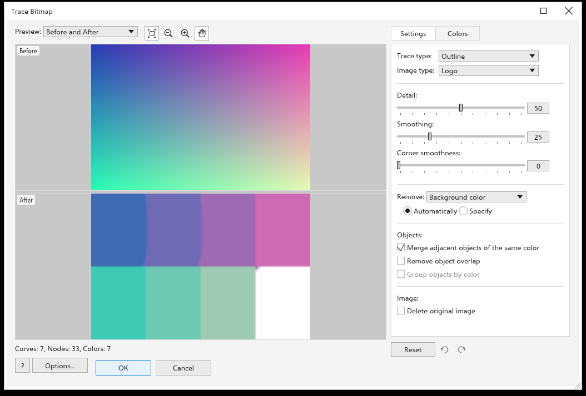

描摹位图
描摹将位图变为矢量形状，你可以编辑、重新着色和缩放它们而不损失质量：扫描的徽标、草图、照片都可以。
快速描摹
选择一个位图并选择 位图 > 快速描摹。它使用全局选项中 位图描摹 页面上选定的预设（起初为剪贴画）。
Repeat Last Trace 不打开对话框，按上次的方式再次描摹所选位图；Open Last Trace Settings 以上次的设置打开对话框。位图的右键菜单中也有这些命令，以及 中心线描摹 和 轮廓描摹。
描摹位图对话框
位图 > 轮廓描摹 和 中心线描摹 列出预设；选择一个即可打开描摹对话框。
- 轮廓描摹 用形状填充颜色区域：线条画、徽标、详细徽标、剪贴画、低质量图像 和 高质量图像。
- 中心线描摹 用开放曲线沿线条描摹：技术图解 和 线条图。

对话框是一个可以调整大小和最大化的窗口。预览占据左侧，设置位于右侧的面板中，每当你更改设置时都会重新描摹：无需按任何按钮即可看到结果。预览下方的一行统计描摹结果的 曲线、节点 和 颜色 数。单击 确定 将形状放在位图上方（最暗的在最先），或单击 取消 保持位图不变。
预览
预览 列表选择预览显示的内容：
- 前后对比：位图在上，描摹结果在下；或 Before and After side by side；之前 只显示位图。
- Large Preview：只显示描摹结果，和预览一样大。
- 线框叠加：描摹结果的曲线以细线画在位图上。列表旁边出现 Overlay 滑块：它设置位图在线条下显示的强度，从 0（只有线条）到 100（位图原样），起初为 80。
列表后面的按钮分别是缩放到适合、缩小、放大和平移。滚轮围绕指针缩放，拖动则移动图片；两个窗格一起移动。透明部分显示棋盘格。
设置
设置 选项卡包含：
- 描摹类型 轮廓或中心线，以及 图像类型 预设。选择一个预设会把下面的滑块设为适合该类图片的值。
- 细节（0 到 100）：细节越多，保留的小区域和细线越多；细节越少，斑点和颗粒越平滑。
- 平滑（0 到 100，起初为 25）：曲线更平滑，节点更少。
- 角平滑度（0 到 100）：拐角更圆。
- 移除：从描摹结果中省去什么。背景颜色 删除到达图片边缘的背景，图像中的整种颜色 删除该颜色的每个区域，无 描摹所有内容。自动 沿图片边缘查找背景颜色；指定 使用色样的颜色，你可以更改它，或用旁边的吸管从预览中拾取。
- 对象：合并相同颜色的相邻对象（起初打开）把一种颜色的所有区域合成一条曲线；关闭时，每个独立的色块是一条单独的曲线。移除对象重叠 让每个形状只占自己的像素；关闭时，形状会稍微伸到上方形状的下面，相邻形状之间就不会出现缝隙。按颜色分组对象 把每种颜色的曲线放进各自的群组；当一种颜色的区域尚未合并时可用。
- 删除原始图像：放置描摹结果时删除位图。
不适用于当前描摹类型的设置显示为灰色：中心线描摹只读取细节和平滑。
颜色
颜色 选项卡设置 颜色模式（RGB、灰度或黑白）和 颜色数（2 到 256），并列出描摹结果的颜色及每种颜色的曲线数。勾选两种或更多颜色并单击 合并选中的颜色，可把它们合并到第一种颜色；单击某种颜色的色样，可用另一种颜色绘制它的曲线。更改会重新描摹图片的设置时，这些属于上一次描摹的编辑会被忘记。
重置、撤消和重做
在设置面板下方，重置 恢复预设的设置，两个箭头在对话框中所做的每项更改之间前后移动：每次松开滑块、选择列表项、勾选复选框、编辑颜色和重置都是一步。撤消后所做的更改会丢弃已撤消的步骤。
选项 打开全局选项的 位图描摹 页面，你可以在那里选择快速描摹的预设以及每次描摹的起始选项，然后返回对话框。帮助 按钮打开此页面。